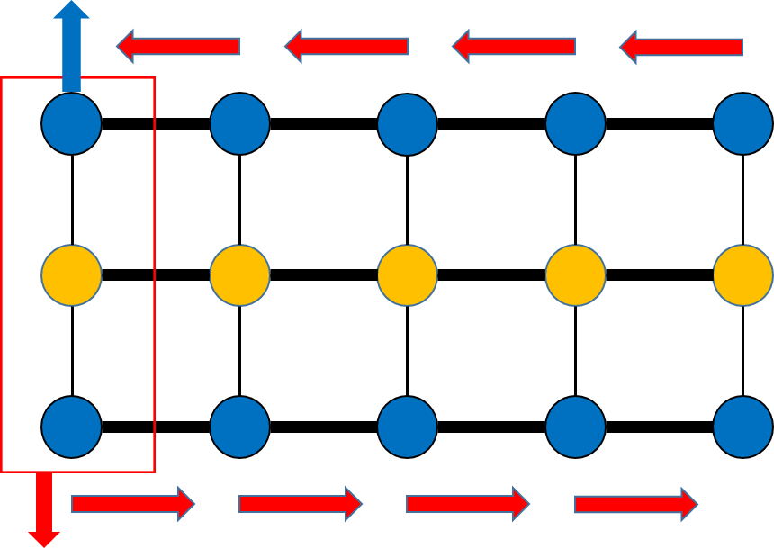
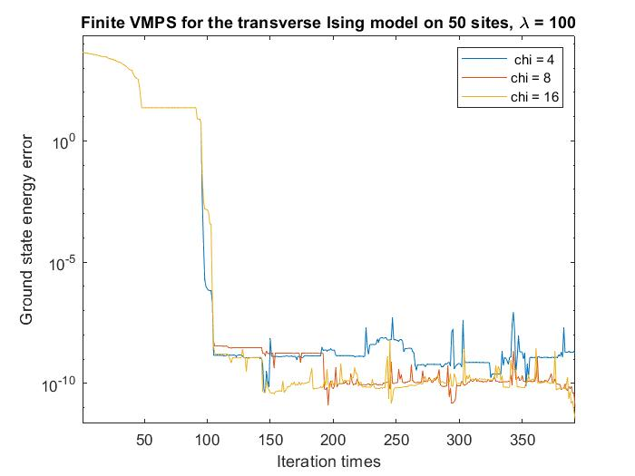
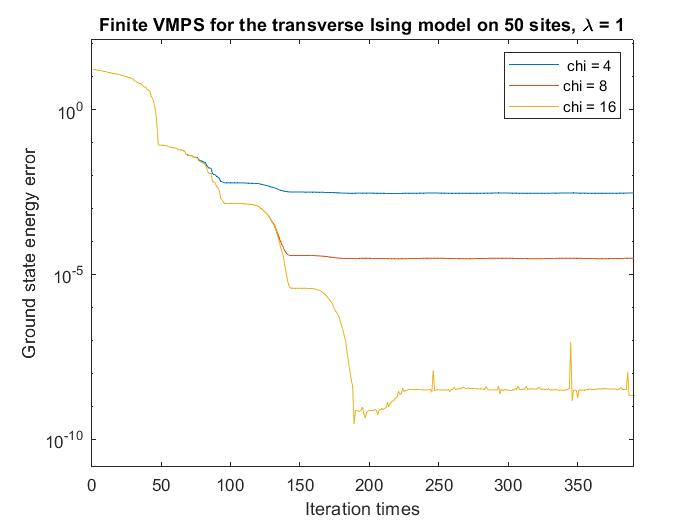
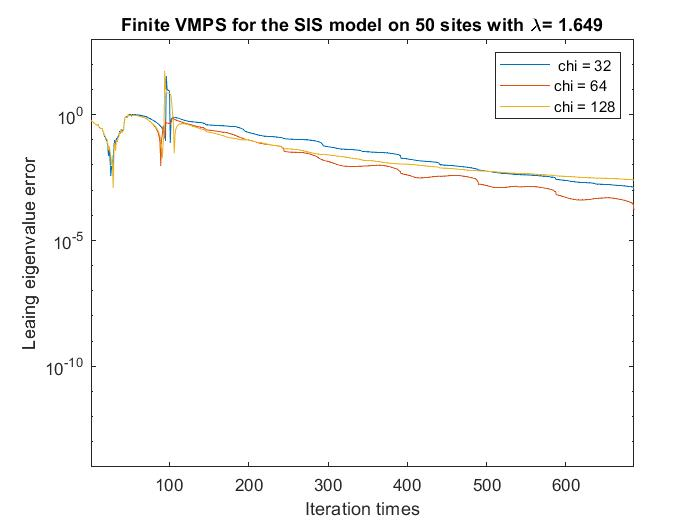
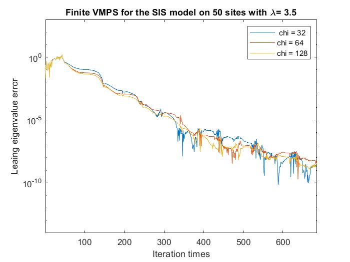
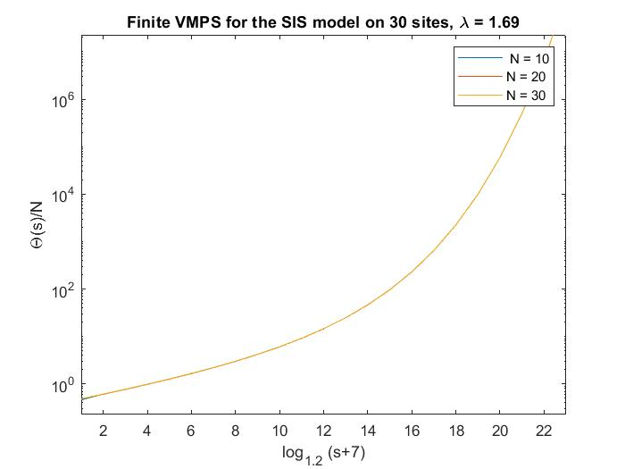
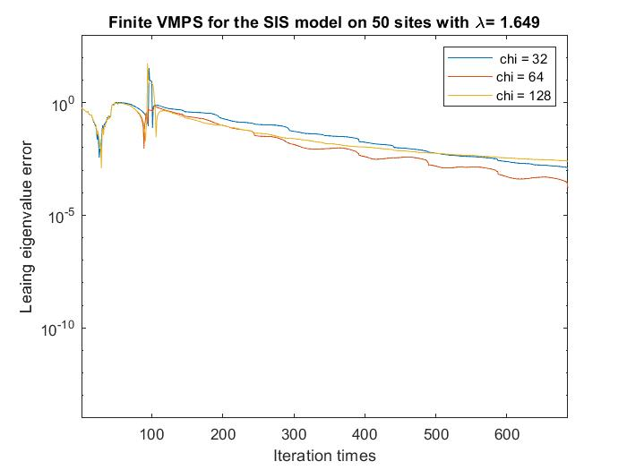
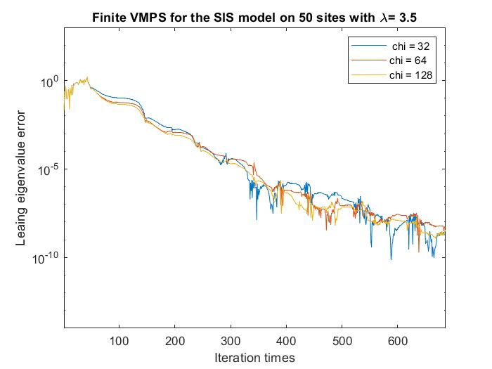
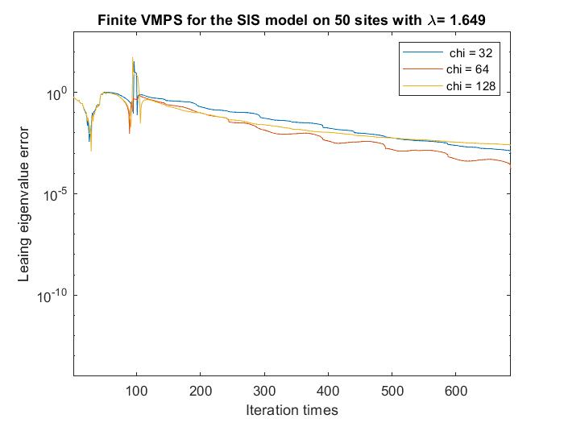
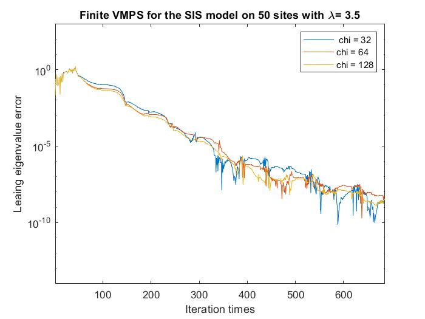

I do this research in 2024 summer. PI: Prof. Hong-Yan Shih and Yi-Ping Huang, Academia Sinica
The tensor network (TN) framework is a robust approach for solving many-body quantum system problems.
Techniques such as matrix product states (MPS) and the density matrix renormalization group (DMRG) provide efficient
numerical tools for these challenges. Recently, physicists have found that these methods can also be applied to other systems,
including stochastic dynamics problems.
Variational matrix product state (VMPS) is a powerful algorithm that can compute the states and energy of huge quantum many-body systems very accurately.
Recently, physicists found that this approach can also be applied to classical stochastic systems. Like we can employ VMPS to find the ground state and the energy of many-body quantum systems, we seek to apply VMPS to find the non-equilibrium
steady state (NESS) and its eigenvalue of huge stochastic lattice models.
We first study the differences between utilizing VMPS for quantum lattice models and classical stochastic lattice models. We take the quantum transverse Ising model and the SIS model \cite{merbis2023efficient} as examples of quantum lattice models and classical stochastic lattice models, respectively. Then, naturally, we need to ask how accurate utilizing VMPS is for classical stochastic models and how is the convergence behaviors. Lastly, we discuss the advantages of leveraging VMPS in these contexts and what something new it can provide us.
Models
Transverse Ising Model
The transverse Ising model plays a crucial role in quantum computing and statistical mechanics. Unlike the classical Ising model, which lacks phase transitions and critical phenomena, the quantum transverse Ising model exhibits both phase transitions and critical behavior due to its quantum nature.
The Hamiltonian for the quantum transverse Ising model with \( N \) sites is given by:
\[
\hat{H} = J \sum_{i=1}^{N-1} \sigma_i^z \otimes \sigma_{i+1}^z + h \sum_{i=1}^N \sigma_i^x,
\]
where \(\sigma^\alpha_j\) represents the Pauli matrices at site \( j \), \( J \) is the interaction strength between adjacent sites, and \( h \) denotes the strength of the transverse field. The Hilbert space of the \( i \)-th site is
\[
\mathcal{H}_i = \text{Span}\{|\uparrow\rangle_i, |\downarrow\rangle_i\},
\]
and the total Hilbert space is
\[
\mathcal{H} = \bigotimes_{i=1}^N \mathcal{H}_i.
\]
The parameters \( J \) and \( h \) determine the phases of the quantum transverse Ising model. The system is in the ordered phase when \( J/h > 1 \) and in the disordered phase when \( J/h < 1 \). The critical point, where the phase transition occurs, is at \( J/h = 1 \).
SIS Model
The SIS model is a fundamental model in mathematical epidemiology. Despite being a classical model, its dynamics can exhibit phase transitions. The binary nature of the SIS model bears resemblance to the Ising model.
In the SIS model, the state of a site is represented by a vector
\[
|P(T)\rangle_i = \begin{pmatrix}
P_S(t) \\
P_I(t)
\end{pmatrix}_i = P_S(t)|S\rangle + P_I(t)|I\rangle,
\]
where \( P_S(t) \), \( P_I(t) \) denote the probabilities of the site being in state \( S \) (susceptible) and state \( I \) (infected), respectively and \(|S\rangle=\begin{pmatrix}
1\\
0
\end{pmatrix}\), \(|I\rangle=\begin{pmatrix}
0\\
1
\end{pmatrix}\). Consequently, the state of the entire system with \( N \) sites is described by the tensor product of the individual site vectors:
\[
|P(t)\rangle = \bigotimes_{i=1}^N |P(t)\rangle_i.
\]
Due to the dynamic nature of the system, phase transitions can be observed in the SIS model.
Like the Hamiltonian
The dynamic of the model on \(N\) sites can be described by the infinitesimal Markov generator \(\hat{W}\) and the master equation $$\partial_t|P(t)\rangle=\hat{W}|P(t)\rangle.$$
The infinitesimal Markov generator is constructed in the next section.\\
There are two modes of infection an individual can experience: infection from the left and infection from the right, as illustrated in the figures below:
Left: Infection from the left; Right: Infection from the right.
The infection conditions are defined as follows: an individual is infected if there is an infected neighbor on the right or left. To model this, we introduce two operators for the \(i\)-th site:
The operator \(\hat{n}_i = |I_i\rangle \langle I|\), which satisfies:
Recovery occurs spontaneously and is modeled using the operator \(\hat{\omega}_i^{I \to S} = |S_i\rangle \langle I| - |I_i\rangle \langle S|\), which transfers probability from \(|I_i\rangle\) to \(|S_i\rangle\). The recovery generator is given by:
\[\gamma \sum_{i=1}^N \hat{\omega}_i^{I \to S},\]
where \(\gamma\) is the recovery rate.
Since the SIS model's behavior depends only on the ratio of the infection rate to the recovery rate, we can rescale the time by setting \(t \to \gamma t\). The infinitesimal Markov generator then becomes:
where \(\lambda = \beta / \gamma\). The Markov generator \(\hat{W}\) encapsulates all the dynamics of the model and provides a basis for analyzing the system.
This is the tensor formulation of the SIS model.
Methodology
The ground state and its energy of the transverse Ising model can be obtained using the standard VMPS method. The following describes how VMPS can be applied to solve the SIS model.
Consider the condition \(t \to \infty\). If \(\hat{W}\) is non-diagonalizable, then there exists a \(J_l\) that is non-diagonal, meaning there is at least one non-diagonal term equal to \(1\). As a consequence, \(\ket{P(t)}\) will diverge. This is not the case for the SIS model. Hence, \(\hat{W}\) should be diagonalizable. That is to say, \(\hat{W}\) satisfies:
\[\hat{W} = \Lambda D \Lambda^{-1},\]
where \(D\) is diagonal and \(D_{ii}\) are the eigenvalues of \(\hat{W}\).
Spectrum
After discussing the diagonalizability of \(\hat{W}\), we want to discuss its spectrum. Since \(\hat{W} = \Lambda D \Lambda^{-1}\), we have:
Consider the condition \(t \to \infty\). One can see that if \(D_{ii} > 0\), then \(|P(t)\rangle\) will diverge. Therefore, \(D_{ii} \leq 0\). Additionally, as \(t \to \infty\), \(e^{t D_{ii}} \to 0\) if \(D_{ii} < 0\) (\(D_{ii} \neq 0\)). The only term that will not go to zero is \(e^{t \cdot 0} = 1\), which is the eigenvalue corresponding to the NESS (Nonequilibrium Steady State).
Matrix Product State (MPS)
Matrix Product States (MPS) is a powerful mathematical framework used in quantum physics and related fields to represent and efficiently compute properties of many-body quantum systems. Originating from the study of one-dimensional quantum systems, MPS provides a way to describe quantum states using a tensor network, where the state of the system is encoded in a series of matrices rather than an exponentially large vector. This compact representation makes it possible to handle large systems with a manageable amount of computational resources. MPS are particularly useful for studying ground states and dynamics of quantum systems, and they form the basis for various numerical methods, including the DMRG and the VMPS method.
Algorithms
To find the NESS, we need to identify the leading eigenstate corresponding to the eigenvalue \(0\). This can be accomplished using the Arnoldi algorithm to diagonalize the matrices and determine the leading eigenvalue at each step. This approach is analogous to applying the VMPS method combined with the Lanczos algorithm, which is used for diagonalizing matrices to compute the ground state energy of quantum models like the transverse Ising model. Just as the ground state energy reveals the ground state itself, identifying the leading eigenvalue provides us with the corresponding eigenstate, which in the case of NESS, is the state associated with the eigenvalue \(0\).
The tensor that we want to optimize (blue nodes)

Local diagonalization by the appropriate algorithms (red box)
We utilize the Variational Matrix Product States (VMPS) method to compute the ground state energy of the transverse Ising model and the leading eigenvalue of the SIS model, both analyzed on a 50-site system.
Transverse Ising Model


Error in the ground state energy for the transverse Ising model computed using VMPS: (a) in the disordered phase, (b) at the critical point, and (c) in the ordered phase.
In the case of the transverse Ising model, we assess the accuracy of the VMPS method by analyzing the deviation of the computed ground state energy from the reference values. The results are presented for three distinct phases:
Disordered Phase: Error analysis when the system is in the disordered phase, characterized by high transverse field strength.
Critical Point: Error analysis at the critical point, where the phase transition occurs.
Ordered Phase: Error analysis in the ordered phase, characterized by low transverse field strength.
SIS Model


Error in the leading eigenvalue for the SIS model computed using VMPS: (a) in the absorbing phase, (b) at the critical point, and (c) in the active phase.
For the SIS model, the accuracy of the VMPS method is evaluated by examining the deviation of the leading eigenvalue from the exact values. The results are shown for the following phases:
Absorbing Phase: Error analysis when the system is in the absorbing phase, where the infection dynamics lead to no further spread.
Critical Point: Error analysis at the critical point, which marks the transition between absorbing and active phases.
Active Phase: Error analysis in the active phase, characterized by ongoing infection spread and high activity.
Large Deviation Computation
The large deviation (LD) principle is a theoretical framework used in probability theory and statistical mechanics to understand the behavior of rare events. It provides a way to quantify the probability of deviations of a stochastic process or random variable from its expected behavior.
In essence, the LD describes how probabilities of events that are far from the typical or average outcome decrease exponentially with the size of the deviation. More formally, it involves finding a rate function that characterizes this exponential decay.
Mathematically, for a random variable \(X_n\) and a large deviation sequence, the LD asserts that for large \(n\), the probability that \(X_n\) deviates significantly from its expected value behaves like \(e^{-nI(x)}\), where \(I(x)\) is the rate function associated with the deviation \(x\). This principle is beneficial in fields like statistical mechanics and stochastic dynamics since it helps in understanding the likelihood of rare but significant deviations in large systems. For more details of the LD principle, see Dembo and Zeitouni (2009) and Touchette (2009).
The core object we are interested in LD is the scaled cumulant generating function (SCGF) usually denoted by \(\Theta\). In the SIS model, it is nothing but the leading eigenvalue of the Laplace transformation of \(\hat{W}\). Therefore, we can utilize VMPS to compute SCGF.

The rescaled cumulant generating function
Advantages
Since we can obtain the leading eigenstate (in MPS form), we can obtain the distributions of some physical quantities as well. This property provides some advantages in doing simulations.
Rare Event Simulation
Once the NESS is established, it provides a comprehensive framework for calculating the distributions of various physical quantities within the system. This includes but is not limited to, critical measurements such as the gap length, which can be derived from the statistical properties of the NESS. By understanding the NESS, we gain valuable insights into how these quantities behave and interact under non-equilibrium conditions, allowing for a deeper analysis of the system's physical characteristics.
Distribution of the gap length of NESS.
Conclusion
Target Eigenstate: By transforming the Hamiltonians of quantum models into their corresponding Markov generators, one can extract the target eigenstate of a lattice stochastic dynamical system. This conversion facilitates the study of steady-state properties in complex systems by bridging quantum mechanics and stochastic processes.
NESS Distribution: The Variational Matrix Product States (VMPS) method delivers highly accurate distributions for the Non-Equilibrium Steady State (NESS). This technique is particularly effective for simulating rare events, allowing for precise analysis of phenomena that, while infrequent, have significant effects on the system's overall behavior.
Convergence Near Criticality: The rate of convergence for numerical methods or approximations notably diminishes as the system approaches its critical point. This reduction in convergence rate can present challenges in accurately characterizing the system near criticality, where even minor deviations can lead to substantial changes in behavior.
Outlooking
How can VMPS be used for two-dimensional stochastic models? The Variational Matrix Product States (VMPS) method can be extended to two-dimensional stochastic models by leveraging its ability to represent complex quantum states through tensor networks. This extension involves adapting the VMPS framework to account for the additional spatial dimensions, enabling accurate simulation and analysis of two-dimensional lattice systems.
Can a time-dependent VMPS handle varying infection rates? Yes, a time-dependent VMPS can be employed to address varying infection rates by incorporating time-dependent parameters into the tensor network structure. This approach allows for the modeling of dynamic changes in infection rates over time, thereby providing a flexible framework for studying time-evolving stochastic processes.
Can VMPS be applied to stochastic systems with non-trivial NESS, such as predator-prey models? Indeed, VMPS can be applied to stochastic systems with complex Non-Equilibrium Steady States (NESS), including predator-prey models. By using VMPS, one can accurately capture and analyze the intricate behaviors of such systems, where the NESS may exhibit rich and non-trivial structures due to the interplay between different species or components.


 


